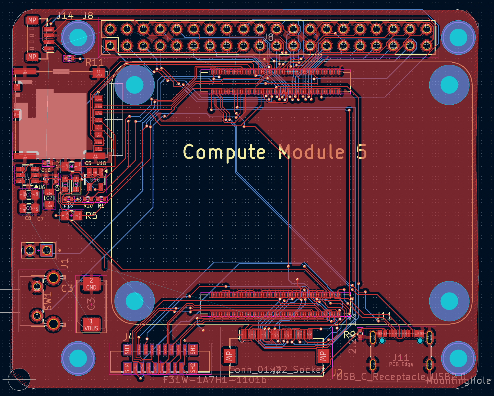
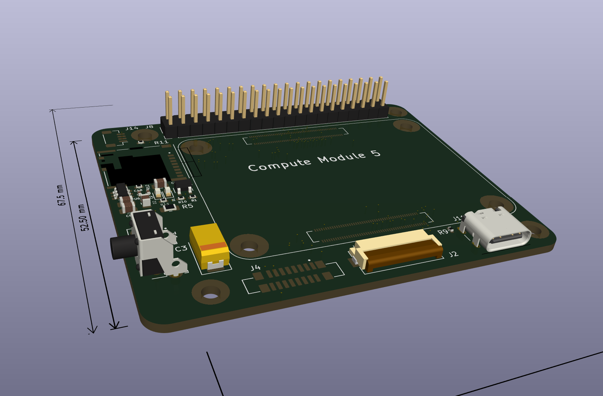
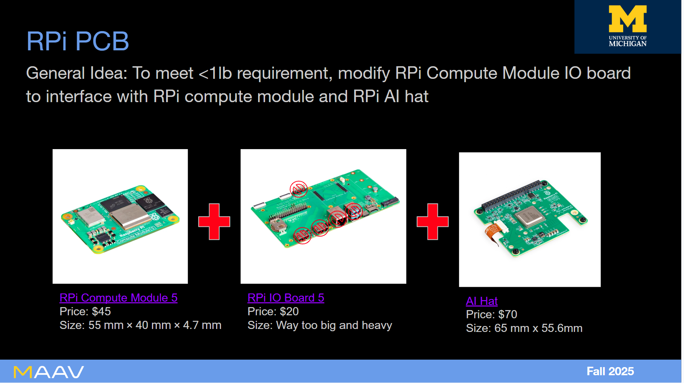
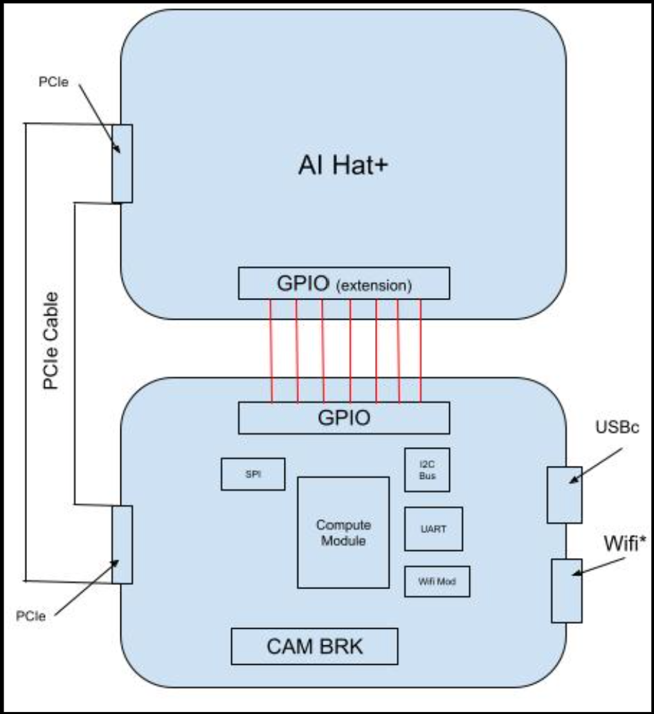
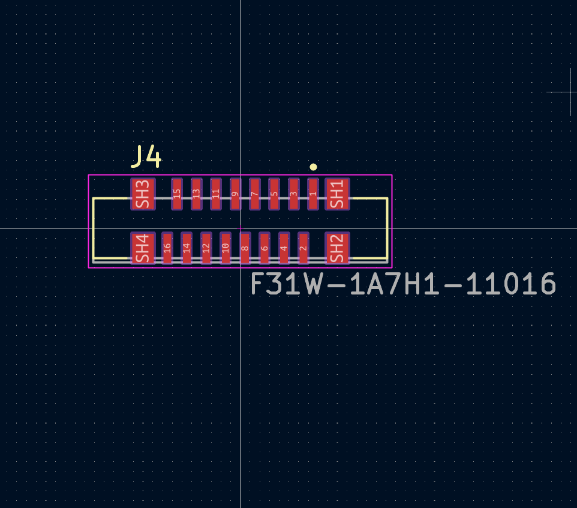

Carrier Board for Fleet of Mine-Detecting Drones
The goal of this board was to optimize for weight. We worked closely with the software team to identify and define the communication protocols required for the mine detection system, along with those needed to support other autonomous operations. The goal was to modify an open-source I/O board designed for Raspberry Pi by removing unnecessary, weight-heavy connectors and integrating essential ones—such as the connector for the AI HAT—to provide the additional computing power required by the software team. My role in this project included documentation research, looking for any open source material we could integrate into our own board. I also contributed to the mechanical design of how the boards would be mounted on the drone and spent time carefully routing high-speed traces to ensure signal integrity. This project is still an active development, but it has taught me a great deal about carefully analyzing documentation and discerning which materials and design approaches are worth incorporating into our system.
PCB Editor

3D Viewer

Developmental Timeline
Initial Ideas
We knew the regular RPi5 would be too heavy on its own. Furthermore, we knew we needed more compute than an RPi5 could provide on its own. The goal was to modify an open-source I/O board and redesign its layout so the AI HAT could be mounted directly on top, reducing overall system weight.

Mechanical Layout
The mechanical layout was designed to ensure that all external connectors remained fully accessible while the custom I/O board aligned and mounted precisely with the AI HAT. Special attention was given to maintaining a clean, rigid PCIe connection between the two boards, ensuring reliable communication without adding unnecessary weight or complexity to the assembly.

Researching Connector Footprints
We needed to add the PCIE connector so we started looking into footprints to add to the schematic. Special attention was given to differential pair routing requirements and impedance considerations to ensure high-speed signal integrity.

Looking Forward
The board is currently in active development. We are preparing for a formal design review where we will validate power distribution, high-speed routing constraints, and mechanical integration requirements with the software team.